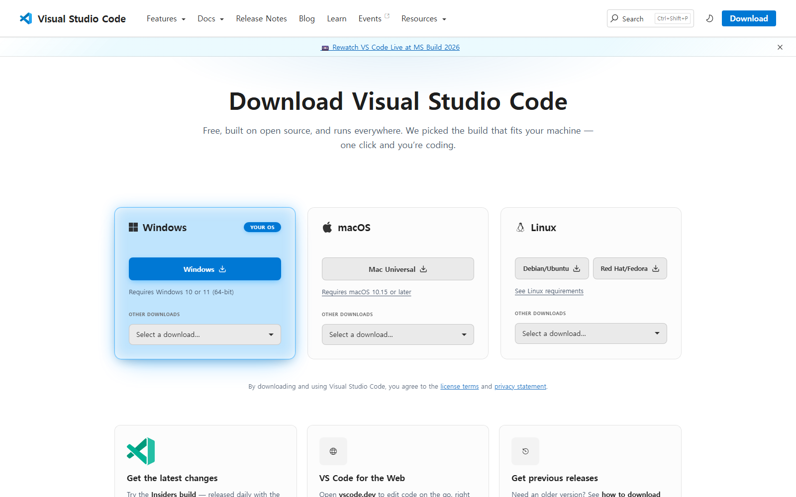
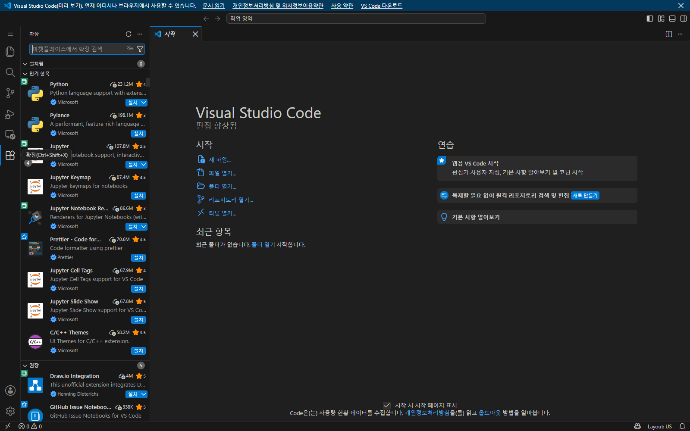
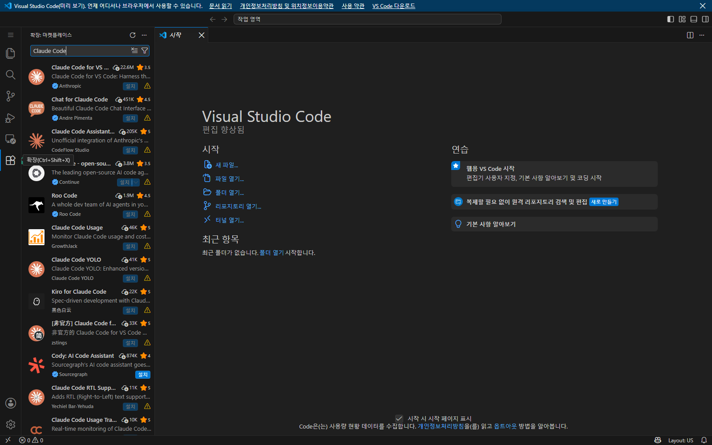
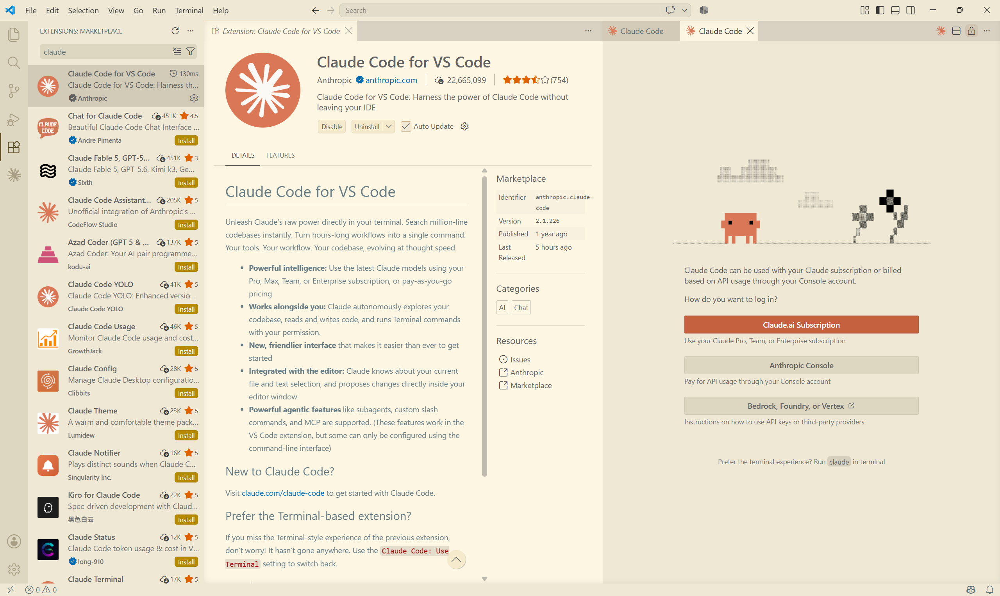
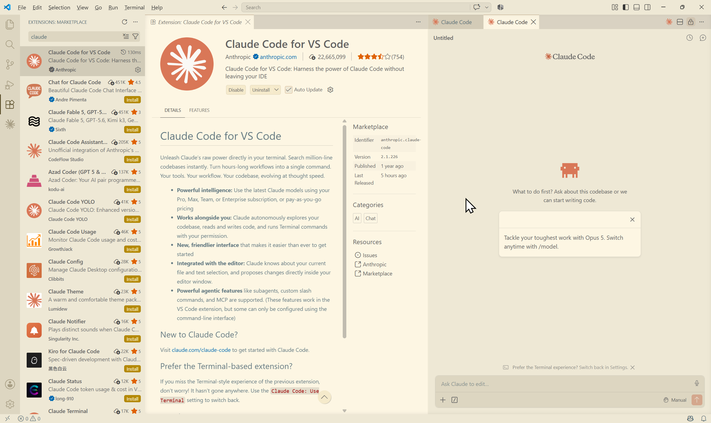
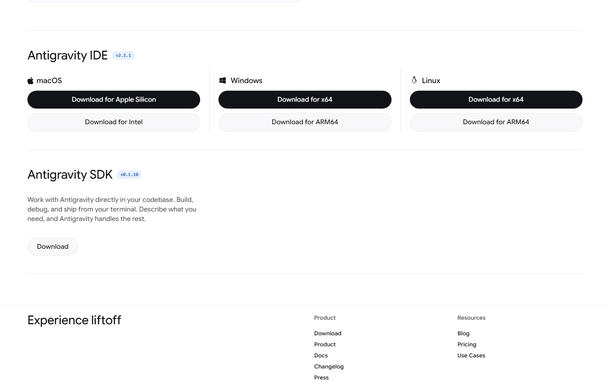
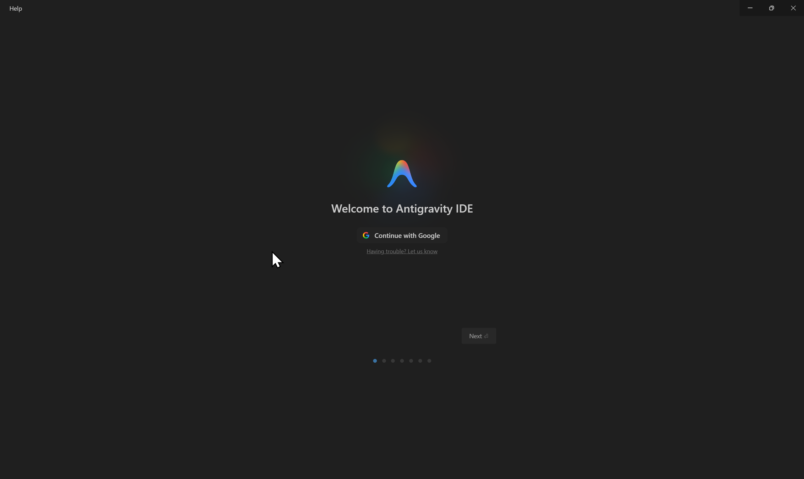
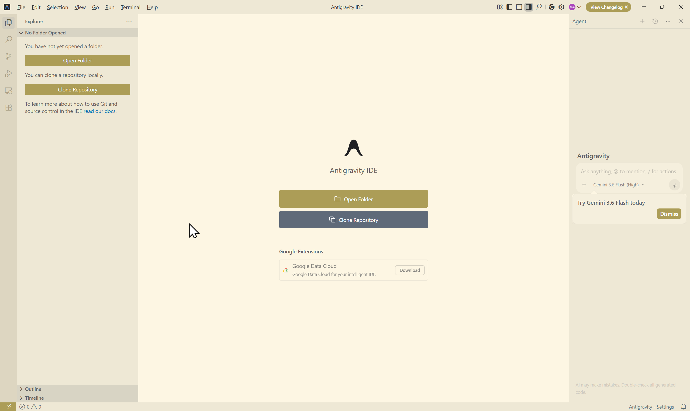

AI 기초부터 업무 자동화까지 · 반복업무 1/10로 줄이기
code.visualstudio.com/download 에서 Windows 버튼을 누릅니다. 설치는 기본값으로 계속 눌러 진행하면 됩니다.
필요 버전: VS Code 1.98.0 이상 (확장이 요구하는 최소 버전)

왼쪽 세로 막대(활동 표시줄)에서 네모 네 개 모양 아이콘을 누릅니다. 단축키는 Ctrl + Shift + X 입니다.

검색창에 claude 를 칩니다. 목록 맨 위 Claude Code for VS Code 를 고르고 「설치」를 누릅니다.
검색 결과가 열 개 넘게 나옵니다. 이름이 비슷한 비공식 확장이 대부분입니다. 고를 것은 맨 위 하나뿐이고, 구별하는 표시는 세 가지입니다 — 이름이 정확히 Claude Code for VS Code, 게시자가 Anthropic, 그 옆에 파란 인증 배지.

설치가 끝나면 「설치」 자리가 사용 안 함 / 제거로 바뀝니다. 그다음 Claude 패널을 열면 로그인 화면이 나옵니다.
세 가지 중 Claude.ai Subscription 을 고르고 브라우저에서 승인하면 끝입니다.
⚠ 유료 구독이 필요합니다 — Pro · Max · Team · Enterprise 중 하나. 무료 Claude 계정으로는 사용할 수 없습니다. 구독이 없으면 아래 경로 B로 가세요.

아래쪽에 Ask Claude to edit… 입력창이 보이면 성공입니다. 여기에 말을 걸면 됩니다.

antigravity.google/download 에서 Antigravity IDE 라고 적힌 칸을 찾아, Windows 열의 Download for x64 를 누릅니다.
이 페이지에는 제품이 네 개 있습니다 — Antigravity 2.0 · CLI · IDE · SDK. 페이지를 열면 2.0이 먼저 보이는데 그건 우리가 쓸 것이 아닙니다. 제목이 Antigravity IDE 인지, 옆의 버전 배지가 v2.1.1 계열인지 확인하고 누르세요.
Windows 10 (64bit) 이상

받은 파일을 실행하면 설치가 진행됩니다. 처음 열면 환영 화면이 뜹니다 — Continue with Google 을 누르고 평소 쓰는 구글 계정으로 로그인하면 됩니다.
별도 결제가 없습니다. 공식 안내는 “Available at no charge” 입니다. (무료 한도는 바뀔 수 있습니다 · 기준일 2026-08-08)

왼쪽에 파일 목록, 오른쪽에 Agent 패널이 보이면 성공입니다. 오른쪽 입력창에 말을 걸면 됩니다.
메뉴 구성이 VS Code와 거의 같습니다 — 과정에서 “왼쪽 탐색기”, “터미널을 여세요” 같은 안내가 그대로 통합니다.
